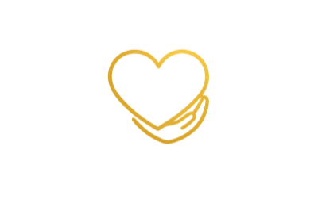
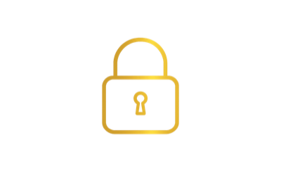
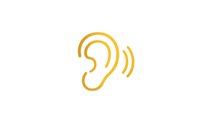
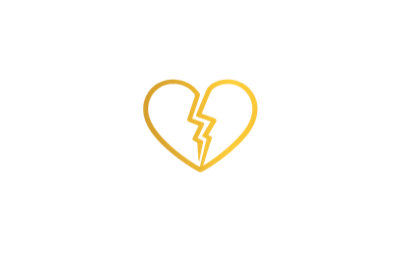
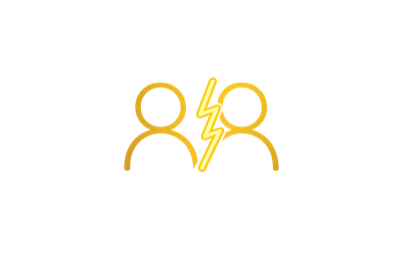
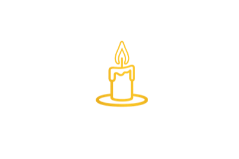
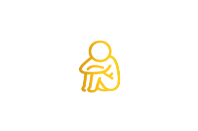
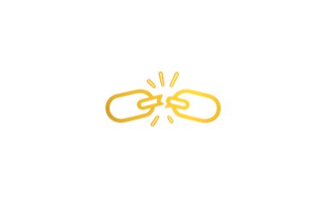
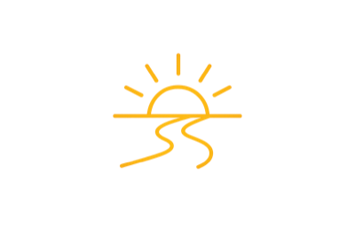
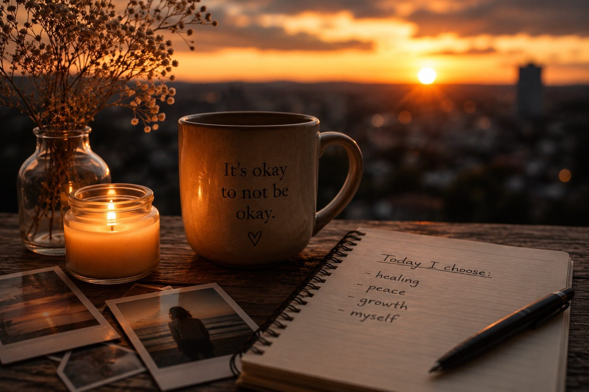

Bez oceny
Akceptacja, szacunek i zrozumienie.
Gabinet Psychologiczny Anna Poźniak
Bo czasem nie potrzebujesz rady. Potrzebujesz kogoś, kto pomoże Ci uwierzyć, że to jeszcze nie koniec Twojej historii.
Nie musisz przechodzić przez to sam.
Tutaj możesz po prostu być

Akceptacja, szacunek i zrozumienie.

Twoja historia pozostaje między nami.

Czasem to właśnie bywa pierwszym krokiem do ulgi.
Razem poszukamy kierunku zgodnego z Tobą.
Zatrzymaj się na chwilę...
Być może od wielu dni nosisz w sobie ból, którego nie potrafisz już nikomu opowiedzieć.
Może ktoś odszedł. Może ktoś Cię zawiódł. Może straciłeś wiarę w siebie. A może po prostu jesteś zmęczony udawaniem, że wszystko jest dobrze.
Nie musisz być silny przez cały czas. Tutaj nie musisz niczego udowadniać.Porozmawiajmy
Dla kogo?






O mnie
Jestem psychologiem i ukończyłam jednolite studia magisterskie z psychologii. W swojej pracy kieruję się szacunkiem, empatią oraz przekonaniem, że każdy człowiek ma prawo do wysłuchania i profesjonalnego wsparcia.
Tworzę miejsce, w którym możesz mówić o swoich emocjach bez lęku przed oceną. Łączę wiedzę psychologiczną, etykę zawodową i pokorę wobec ludzkiego cierpienia.
Twoja historia ma znaczenie.
Oferta
Bezpieczna rozmowa, rozpoznanie potrzeb i wspólne ustalenie dalszego kierunku.
Pomoc w trudnych wydarzeniach życiowych, nagłych zmianach i kryzysie zdrowotnym.
Wsparcie w przeżywaniu straty, złości, lęku i poczucia odrzucenia.
Praca nad zaufaniem do siebie, granicami i odzyskaniem wewnętrznej równowagi.
„Nie obiecuję, że od jutra wszystko będzie łatwe. Obiecuję bezpieczną przestrzeń, profesjonalne wsparcie i pełną obecność.”
Blog

Umów spotkanie
Pierwszy krok nie musi być wielki. Wystarczy jedna chwila odwagi, aby umówić konsultację.
Asystent Anny
Wirtualny asystent AI
To rozmowa z AI, nie z terapeutą. W nagłych sytuacjach zadzwoń pod 112 lub na Kryzysowy Telefon Zaufania 116 123.